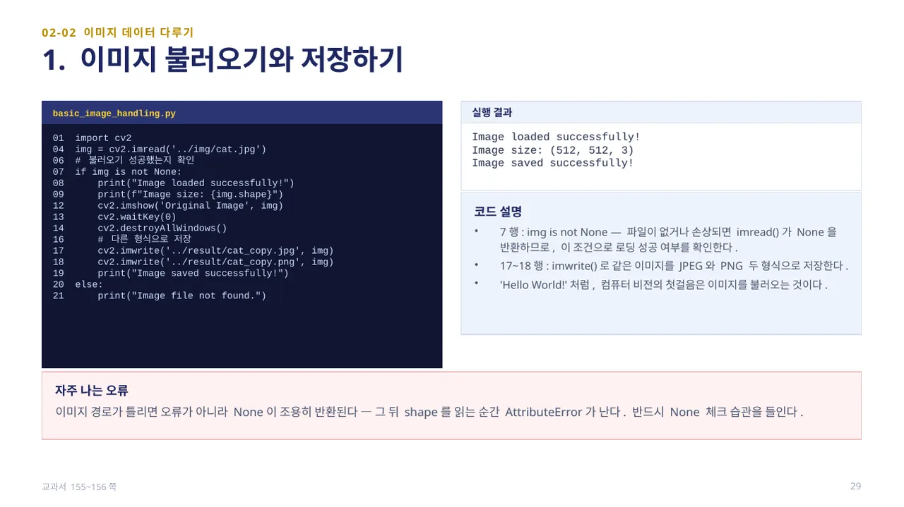
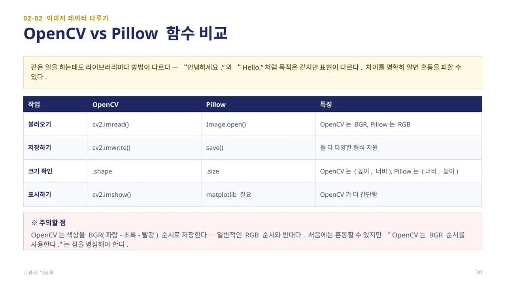
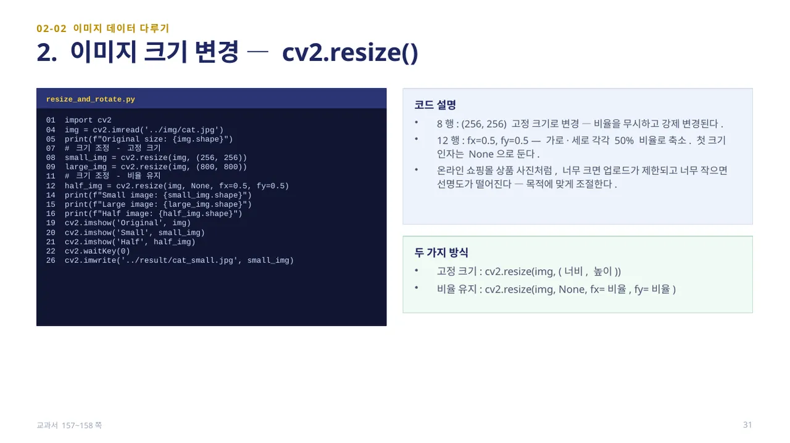
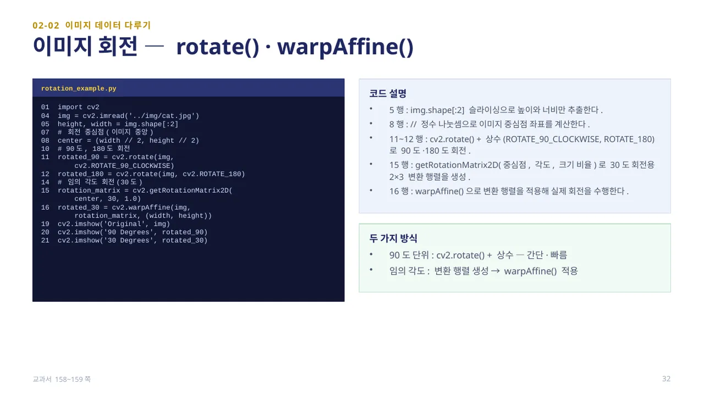
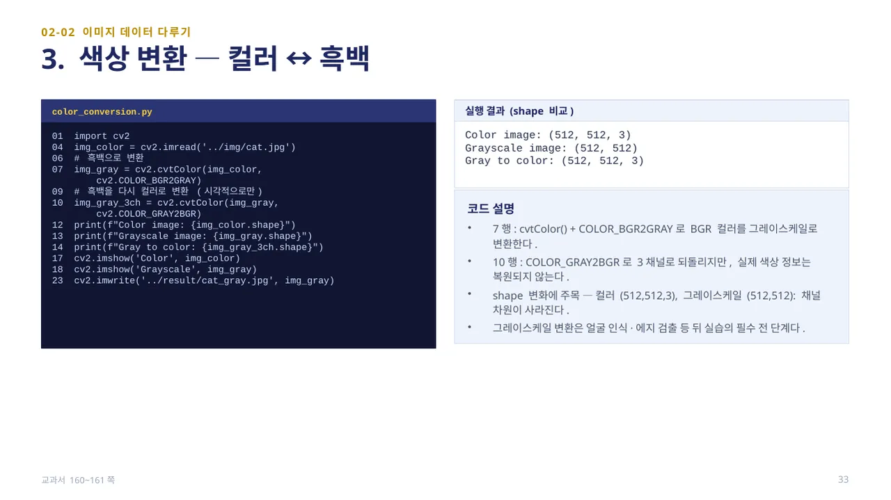
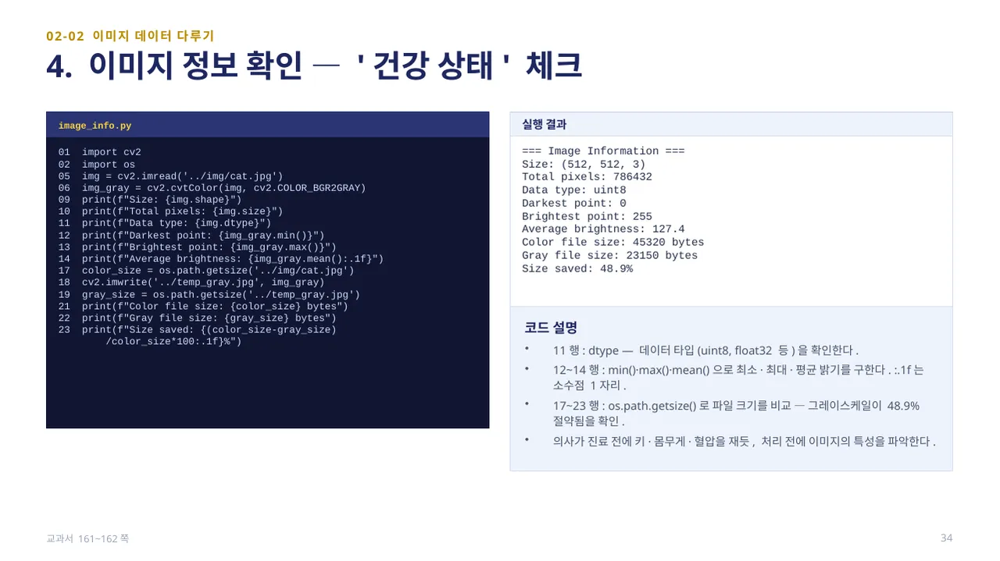
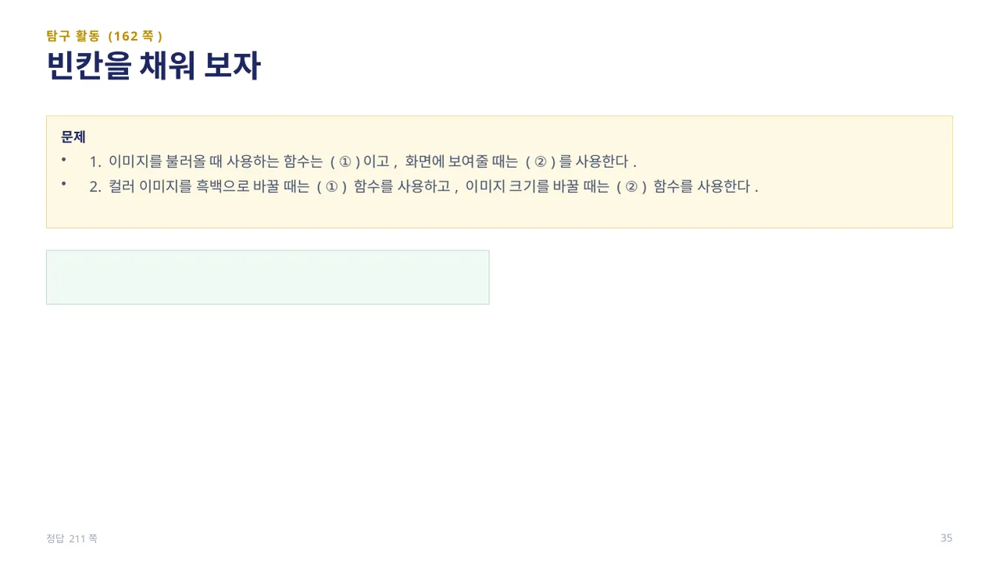
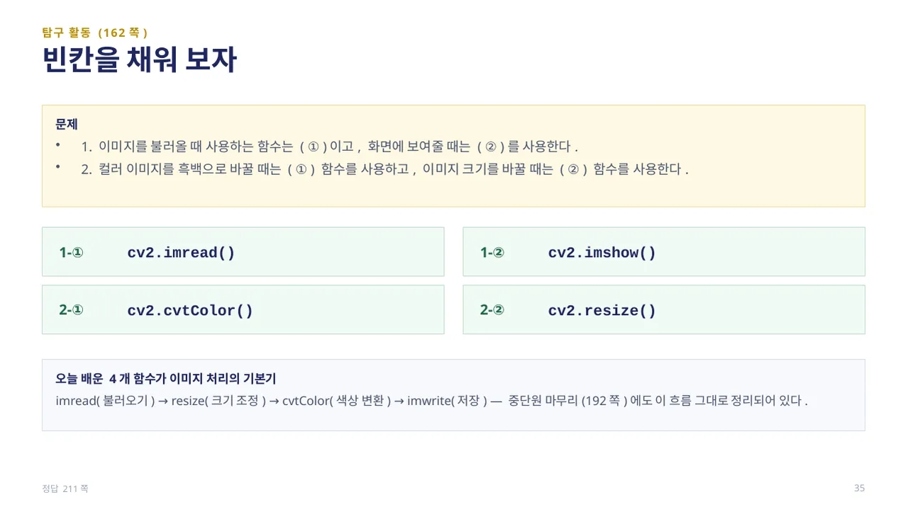

중단원 02. 컴퓨터 비전 라이브러리 활용 · 147–193쪽 소단원 02. 이미지 데이터 다루기· 155–162쪽
이 웹 주제의 연계 범위: 155–162쪽
교과서 155–162쪽
이미지 읽기·표시·변환·저장
파일을 못 읽었을 때 무엇부터 확인할까요?

basic_image_handling.py — 4행cv2.imread(‘../img/cat.jpg’)로 이미지를 불러오고, 7행if img is not None:으로 로딩 성공 여부를 확인합니다. 파일이 없거나 손상되면 imread()는 오류 없이 None을 조용히 반환하므로, 이후 shape를 읽는 순간 AttributeError가 날 수 있습니다 — None 체크 습관이 중요합니다.
17~18행cv2.imwrite()로 같은 이미지를 JPEG와 PNG 두 형식으로 저장합니다. ‘Hello World!’처럼, 컴퓨터 비전의 첫걸음은 이미지를 불러오는 것입니다. (교과서 155~156쪽)

같은 일을 하는데도 라이브러리마다 방법이 다릅니다. 불러오기는 OpenCV가 cv2.imread(), Pillow가 Image.open()이고, 저장하기는 각각 cv2.imwrite()와 save()입니다. 크기 확인은 OpenCV가 .shape(높이, 너비, 채널), Pillow가 .size(너비, 높이)로 순서가 다릅니다.
가장 주의할 점은 색상 순서입니다 — OpenCV는 색상을 BGR(파랑-초록-빨강) 순서로 저장합니다. 일반적인 RGB 순서와 반대이므로, OpenCV로 읽은 이미지를 matplotlib으로 그대로 그리면 색이 이상하게 보입니다. “OpenCV는 BGR 순서를 사용한다”는 점을 꼭 기억해야 합니다. (교과서 156쪽)

resize_and_rotate.py — 8행cv2.resize(img, (256, 256))처럼 고정 크기로 바꾸면 원래 비율을 무시하고 강제로 변경됩니다. 12행cv2.resize(img, None, fx=0.5, fy=0.5)처럼 비율 유지 방식은 첫 크기 인자를 None으로 두고 fx·fy로 가로·세로 비율을 지정합니다.
온라인 쇼핑몰 상품 사진처럼, 너무 크면 업로드가 제한되고 너무 작으면 선명도가 떨어지므로 목적에 맞게 크기를 조절합니다. (교과서 157~158쪽)

rotation_example.py — 90도·180도처럼 정해진 각도는 11~12행cv2.rotate(img, cv2.ROTATE_90_CLOCKWISE)나 cv2.ROTATE_180 같은 상수로 간단하고 빠르게 회전시킵니다.
임의 각도(예: 30도)는 8행center = (width // 2, height // 2)로 중심점을 구하고, 15행cv2.getRotationMatrix2D(center, 30, 1.0)으로 2×3 변환 행렬을 만든 뒤, 16행cv2.warpAffine(img, rotation_matrix, (width, height))으로 실제 회전을 적용합니다. img.shape[:2] 슬라이싱으로 높이·너비만 먼저 추출해 두는 것이 관례입니다. (교과서 158~159쪽)

color_conversion.py — 7행cv2.cvtColor(img_color, cv2.COLOR_BGR2GRAY)로 BGR 컬러를 그레이스케일로 변환합니다. 10행cv2.COLOR_GRAY2BGR로 3채널로 되돌릴 수는 있지만, 실제 색상 정보가 복원되는 것은 아니며 시각적으로만 3채널 형태가 됩니다.
shape 변화에 주목해야 합니다 — 컬러는 (512, 512, 3)인데 그레이스케일로 바꾸면 (512, 512)로 채널 차원이 사라집니다. 그레이스케일 변환은 얼굴 인식·에지 검출 등 뒤에 나오는 실습의 필수 전 단계입니다. (교과서 160~161쪽)

image_info.py는 의사가 진료 전에 키·몸무게·혈압을 재듯, 처리 전에 이미지의 특성을 파악합니다. 11행img.dtype은 데이터 타입(uint8 등), 12~14행min()·max()·mean()으로 최소·최대·평균 밝기를 구합니다.
17~23행은 os.path.getsize()로 컬러 파일과 그레이스케일 파일의 크기를 비교합니다 — 실행 결과 그레이스케일이 색상 정보를 지운 만큼 파일 크기를 절약합니다(이 예시에서 약 48.9%). (교과서 161~162쪽)

탐구 활동(162쪽): 1. 이미지를 불러올 때 사용하는 함수는 ( ① )이고, 화면에 보여줄 때는 ( ② )를 사용합니다. 2. 컬러 이미지를 흑백으로 바꿀 때는 ( ① ) 함수를, 이미지 크기를 바꿀 때는 ( ② ) 함수를 사용합니다.
답 보기답 숨기기

1-① cv2.imread(), 1-② cv2.imshow() / 2-① cv2.cvtColor(), 2-② cv2.resize(). imread(불러오기) → resize(크기 조정) → cvtColor(색상 변환) → imwrite(저장)의 네 함수가 이미지 처리의 기본기이며, 중단원 마무리(192쪽)에도 이 흐름이 그대로 정리되어 있습니다. (정답 211쪽)
 인공지능 파이썬 실무
인공지능 파이썬 실무